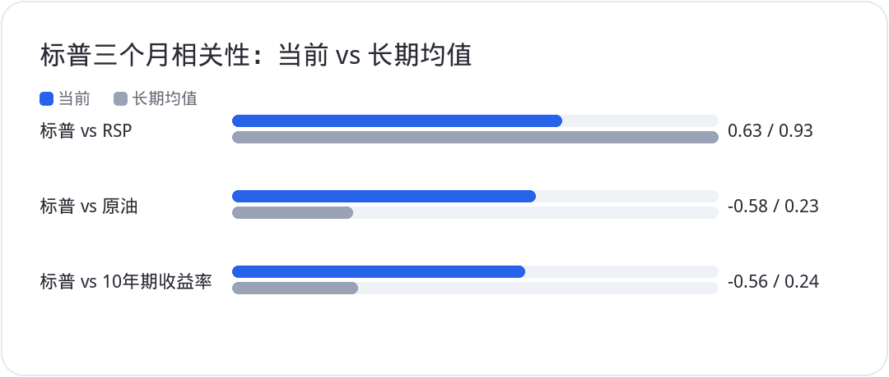
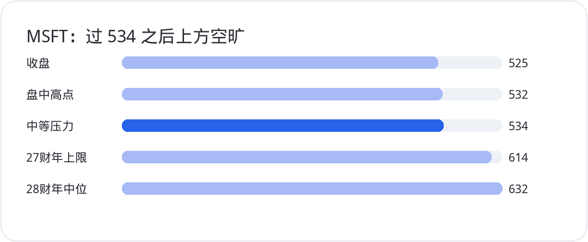

<div style="margin:0;padding:0;background:#f5f7fa;color:#2a2a34;font-size:16px;line-height:1.9;font-family:-apple-system,BlinkMacSystemFont,'SF Pro Text','PingFang SC','Hiragino Sans GB','Microsoft YaHei',Arial,sans-serif;font-variant-numeric:tabular-nums;font-feature-settings:'tnum' 1,'lnum' 1;text-align:left !important;text-align-last:left;letter-spacing:0;word-spacing:normal;white-space:normal;word-break:normal;box-sizing:border-box;"><div style="margin:0;background:#ffffff;padding:28px 22px 44px 22px;box-sizing:border-box;text-align:left !important;text-align-last:left;letter-spacing:0;word-spacing:normal;white-space:normal;word-break:normal;"><p style="display:block;width:100%;margin:0 0 12px 0;padding:0;color:#2763e9;font-size:10px;line-height:1.6;font-weight:650;letter-spacing:0.12em;text-align:center !important;text-align-last:center;word-spacing:normal;white-space:normal;word-break:normal;box-sizing:border-box;">美股 · 期权 · 资讯 · 观点</p><div style="margin:0 0 30px 0;padding:0;text-align:center !important;text-align-last:center;word-spacing:normal;white-space:normal;word-break:normal;box-sizing:border-box;"></div><div style="margin:0 0 0 0;padding:28px 0 0 0;text-align:left !important;text-align-last:left;letter-spacing:0;word-spacing:normal;white-space:normal;word-break:normal;box-sizing:border-box;"><div style="margin:0 0 12px 0;padding:0;text-align:left !important;line-height:1.2;border:0;display:flex;align-items:center;gap:10px;text-align-last:left;letter-spacing:0;word-spacing:normal;white-space:normal;word-break:normal;box-sizing:border-box;"><span style="display:inline-block;flex:0 0 auto;vertical-align:middle;color:#2763e9;font-size:12px;font-weight:850;letter-spacing:0.12em;line-height:1.2;text-transform:uppercase;border:0;box-sizing:border-box;">0 · FOCUS</span><span style="display:block;flex:1 1 auto;min-width:36px;vertical-align:middle;height:1px;margin:0 0 2px 0;background:#2763e9;line-height:1px;font-size:0;border:0;box-sizing:border-box;"></span></div><p style="margin:0 0 16px 0;padding:0;color:#2a2a34;font-size:22px;line-height:1.45;font-weight:850;text-align:left !important;letter-spacing:0;text-align-last:left;word-spacing:normal;white-space:normal;word-break:normal;box-sizing:border-box;">先说结论</p><p style="margin:0 0 16px 0;padding:0;color:#454550;font-size:16px;line-height:1.9;font-weight:400;text-align:left !important;letter-spacing:0;word-spacing:normal;white-space:normal;word-break:normal;text-align-last:left;box-sizing:border-box;">周一盘面很轻松。四大指数普涨，纳指再创历史新高；标普成分股 317 只上涨、183 只下跌，11 个板块里 10 个收红，只有地产信托下跌。</p><p style="margin:0 0 16px 0;padding:0;color:#454550;font-size:16px;line-height:1.9;font-weight:400;text-align:left !important;letter-spacing:0;word-spacing:normal;white-space:normal;word-break:normal;text-align-last:left;box-sizing:border-box;">今天信息量不大，个股层面的核心变化也不多，上周该讲的已经讲过。热闹归热闹，结构没变：钱还挤在业绩最硬的那一小撮科技和半导体里，标普指数本身越来越不能代表&quot;大多数股票&quot;。对冲基金的仓位把这件事讲得很直白，总杠杆在降，科技多头小幅加，其余板块净卖。手里有 AI 和半导体周期股的，继续拿着让行情抬；没上车的，别在新高处硬追，去找还没启动的位置。</p></div><div style="margin:30px 0 0 0;padding:28px 0 0 0;text-align:left !important;text-align-last:left;letter-spacing:0;word-spacing:normal;white-space:normal;word-break:normal;box-sizing:border-box;"><div style="margin:0 0 12px 0;padding:0;text-align:left !important;line-height:1.2;border:0;display:flex;align-items:center;gap:10px;text-align-last:left;letter-spacing:0;word-spacing:normal;white-space:normal;word-break:normal;box-sizing:border-box;"><span style="display:inline-block;flex:0 0 auto;vertical-align:middle;color:#2763e9;font-size:12px;font-weight:850;letter-spacing:0.12em;line-height:1.2;text-transform:uppercase;border:0;box-sizing:border-box;">1 · FOCUS</span><span style="display:block;flex:1 1 auto;min-width:36px;vertical-align:middle;height:1px;margin:0 0 2px 0;background:#2763e9;line-height:1px;font-size:0;border:0;box-sizing:border-box;"></span></div><p style="margin:0 0 16px 0;padding:0;color:#2a2a34;font-size:22px;line-height:1.45;font-weight:850;text-align:left !important;letter-spacing:0;text-align-last:left;word-spacing:normal;white-space:normal;word-break:normal;box-sizing:border-box;">ISM 服务业：喜忧参半，价格偏热</p><p style="margin:0 0 16px 0;padding:0;color:#454550;font-size:16px;line-height:1.9;font-weight:400;text-align:left !important;letter-spacing:0;word-spacing:normal;white-space:normal;word-break:normal;text-align-last:left;box-sizing:border-box;">9 月 ISM 非制造业 PMI 从 8 月的 55.4 回落到 54.9，略低于 55 的预期，但仍高于过去 12 个月 54.1 的均值。商业活动指数从 61.7 掉到 56.5，新订单分项也一起走弱，总指数主要被这两项拖住。</p><p style="margin:0 0 16px 0;padding:0;color:#454550;font-size:16px;line-height:1.9;font-weight:400;text-align:left !important;letter-spacing:0;word-spacing:normal;white-space:normal;word-break:normal;text-align-last:left;box-sizing:border-box;">另一头偏热。价格指数从 72.6 升到 74，高于 73.3 的预期；就业指数连续两个月收缩后回到 50 上方，从 47.8 升到 50.1，好于 48.8 的预期。行业分布上，报告增长的行业 13 个，比 8 月多一个；报告收缩的 4 个，少一个。</p><p style="margin:0 0 16px 0;padding:0;color:#454550;font-size:16px;line-height:1.9;font-weight:400;text-align:left !important;letter-spacing:0;word-spacing:normal;white-space:normal;word-break:normal;text-align-last:left;box-sizing:border-box;">服务业还在扩张，速度温和，也弱于标普全球服务业 PMI 的读数。价格分项走高、就业回到扩张，对利率预期谈不上友好。指数今天没拿这份数据当回事。它是背景，不是主线。</p></div><div style="margin:30px 0 0 0;padding:28px 0 0 0;text-align:left !important;text-align-last:left;letter-spacing:0;word-spacing:normal;white-space:normal;word-break:normal;box-sizing:border-box;"><div style="margin:0 0 12px 0;padding:0;text-align:left !important;line-height:1.2;border:0;display:flex;align-items:center;gap:10px;text-align-last:left;letter-spacing:0;word-spacing:normal;white-space:normal;word-break:normal;box-sizing:border-box;"><span style="display:inline-block;flex:0 0 auto;vertical-align:middle;color:#2763e9;font-size:12px;font-weight:850;letter-spacing:0.12em;line-height:1.2;text-transform:uppercase;border:0;box-sizing:border-box;">2 · FOCUS</span><span style="display:block;flex:1 1 auto;min-width:36px;vertical-align:middle;height:1px;margin:0 0 2px 0;background:#2763e9;line-height:1px;font-size:0;border:0;box-sizing:border-box;"></span></div><p style="margin:0 0 16px 0;padding:0;color:#2a2a34;font-size:22px;line-height:1.45;font-weight:850;text-align:left !important;letter-spacing:0;text-align-last:left;word-spacing:normal;white-space:normal;word-break:normal;box-sizing:border-box;">标普跟什么都不同步了</p><p style="margin:0 0 16px 0;padding:0;color:#454550;font-size:16px;line-height:1.9;font-weight:400;text-align:left !important;letter-spacing:0;word-spacing:normal;white-space:normal;word-break:normal;text-align-last:left;box-sizing:border-box;">结论放前面：现在想靠标普 500 判断&quot;市场好不好&quot;，越看越糊涂。</p><p style="margin:0 0 16px 0;padding:0;color:#454550;font-size:16px;line-height:1.9;font-weight:400;text-align:left !important;letter-spacing:0;word-spacing:normal;white-space:normal;word-break:normal;text-align-last:left;box-sizing:border-box;">第一，指数和等权背离。标普 500 与等权重 <strong style="color:#2a2a34;font-weight:700;box-sizing:border-box;">RSP</strong> 的三个月实际相关性，9 月 22 日跌到 0.598，15 年最低，比 0.93 的长期均值低了四个标准差；截至上周五也只有 0.63。标普贴着新高，等权指数之前却跌了不少。于是才有那种别扭感：纳指天天新高，手里的消费股跌得稀里哗啦。</p><p style="margin:0 0 16px 0;padding:0;color:#454550;font-size:16px;line-height:1.9;font-weight:400;text-align:left !important;letter-spacing:0;word-spacing:normal;white-space:normal;word-break:normal;text-align-last:left;box-sizing:border-box;">第二，AI 和非 AI 已经分家。从 8 月起，AI 投资组合与&quot;标普 500 剔除 AI 成分股&quot;之间的相关性跌到有记录以来最低、也最负的水平。</p><p style="margin:0 0 16px 0;padding:0;color:#454550;font-size:16px;line-height:1.9;font-weight:400;text-align:left !important;letter-spacing:0;word-spacing:normal;white-space:normal;word-break:normal;text-align-last:left;box-sizing:border-box;">第三，宏观锚也松了。标普与原油的三个月实际相关性是 -0.58，离 6 月创纪录的 -0.62 不远，而 15 年均值是 +0.23。与十年期美债收益率的相关性是 -0.56，6 月低点 -0.64，均值 +0.24。</p><p style="margin:4px 0 16px 0;padding:0;text-align:center !important;text-align-last:center;word-spacing:normal;white-space:normal;word-break:normal;box-sizing:border-box;"></p><p style="margin:0 0 16px 0;padding:0;color:#454550;font-size:16px;line-height:1.9;font-weight:400;text-align:left !important;letter-spacing:0;word-spacing:normal;white-space:normal;word-break:normal;text-align-last:left;box-sizing:border-box;">第四，板块各走各的。必需消费、能源、公用事业、医疗保健与标普的 63 天相关性全部跌到 0 或以下，必需消费和能源更是 20 年最低。美银股票衍生品团队认为，不确定性在反复重估 AI 与政策层面的赢家和输家，行业间、行业内的相关性都被削弱；他们统计过去 12 个月个股与行业间相关性约 0.1，低于 1991 年以来的第 5 百分位。广度也难看，标普成分股&quot;52 周新高减 52 周新低&quot;的 5 日均值跌到 -25%，18 个月来最差。</p><p style="margin:0 0 16px 0;padding:0;color:#454550;font-size:16px;line-height:1.9;font-weight:400;text-align:left !important;letter-spacing:0;word-spacing:normal;white-space:normal;word-break:normal;text-align-last:left;box-sizing:border-box;">机制不复杂。AI 相关的好股票在涨，不相关的资金不碰，甚至一路往下走。指数权重集中在前者，所以指数新高和多数股票下跌可以同时成立。交易上，别拿指数涨跌去校验个股持仓，要看自己的票是不是站在业绩上修那一边。</p></div><div style="margin:30px 0 0 0;padding:28px 0 0 0;text-align:left !important;text-align-last:left;letter-spacing:0;word-spacing:normal;white-space:normal;word-break:normal;box-sizing:border-box;"><div style="margin:0 0 12px 0;padding:0;text-align:left !important;line-height:1.2;border:0;display:flex;align-items:center;gap:10px;text-align-last:left;letter-spacing:0;word-spacing:normal;white-space:normal;word-break:normal;box-sizing:border-box;"><span style="display:inline-block;flex:0 0 auto;vertical-align:middle;color:#2763e9;font-size:12px;font-weight:850;letter-spacing:0.12em;line-height:1.2;text-transform:uppercase;border:0;box-sizing:border-box;">3 · LIQUIDITY</span><span style="display:block;flex:1 1 auto;min-width:36px;vertical-align:middle;height:1px;margin:0 0 2px 0;background:#2763e9;line-height:1px;font-size:0;border:0;box-sizing:border-box;"></span></div><p style="margin:0 0 16px 0;padding:0;color:#2a2a34;font-size:22px;line-height:1.45;font-weight:850;text-align:left !important;letter-spacing:0;text-align-last:left;word-spacing:normal;white-space:normal;word-break:normal;box-sizing:border-box;">对冲基金：降杠杆，只坐在科技上</p><p style="margin:0 0 16px 0;padding:0;color:#454550;font-size:16px;line-height:1.9;font-weight:400;text-align:left !important;letter-spacing:0;word-spacing:normal;white-space:normal;word-break:normal;text-align-last:left;box-sizing:border-box;">上周美国基本面多空策略的净杠杆连续第三周下降，再跌 2.2 个百分点到 46.4%（前一周 48.6%），是 2023 年 4 月低点前后以来最低，接近 5 年低点，处在第 2 百分位。多空比下降 1.9% 到 1.57，5 年维度第 1 百分位，1 年回溯是第 0 百分位，也就是最低。股市在涨，总多头却没往上加。</p><p style="margin:0 0 16px 0;padding:0;color:#454550;font-size:16px;line-height:1.9;font-weight:400;text-align:left !important;letter-spacing:0;word-spacing:normal;white-space:normal;word-break:normal;text-align-last:left;box-sizing:border-box;">也不是什么都不买。高盛数据显示，美国科技是 9 月唯一被净买入的板块，净买入比例为 2023 年 2 月以来最高；周期、防御、非必需消费等其余板块全部净卖出。买科技也谈不上猛冲，更多是怕落后，因为市场一直推着科技股往上走。</p><p style="margin:0 0 16px 0;padding:0;color:#454550;font-size:16px;line-height:1.9;font-weight:400;text-align:left !important;letter-spacing:0;word-spacing:normal;white-space:normal;word-break:normal;text-align-last:left;box-sizing:border-box;">说白了：对整个标普的做多信念几乎为零，没有方向；只是坐在业绩强的科技股这顶轿子上，零星加一点，等着被抬。资金为什么扎堆科技？回到本质，标普的业绩贡献里科技、AI、半导体推动最强，上修也最快。先有业绩，才有买入。其他板块在弱势里没什么可讲，也不是热点。</p><p style="margin:0 0 16px 0;padding:0;color:#454550;font-size:16px;line-height:1.9;font-weight:400;text-align:left !important;letter-spacing:0;word-spacing:normal;white-space:normal;word-break:normal;text-align-last:left;box-sizing:border-box;">仓位结构和对冲基金差不多的，就是被抬轿子。给不了加仓机会，就让现有仓位慢慢跑利润，不必为了补齐其他板块去接弱势股。</p></div><div style="margin:30px 0 0 0;padding:28px 0 0 0;text-align:left !important;text-align-last:left;letter-spacing:0;word-spacing:normal;white-space:normal;word-break:normal;box-sizing:border-box;"><div style="margin:0 0 12px 0;padding:0;text-align:left !important;line-height:1.2;border:0;display:flex;align-items:center;gap:10px;text-align-last:left;letter-spacing:0;word-spacing:normal;white-space:normal;word-break:normal;box-sizing:border-box;"><span style="display:inline-block;flex:0 0 auto;vertical-align:middle;color:#2763e9;font-size:12px;font-weight:850;letter-spacing:0.12em;line-height:1.2;text-transform:uppercase;border:0;box-sizing:border-box;">4 · MEGACAP</span><span style="display:block;flex:1 1 auto;min-width:36px;vertical-align:middle;height:1px;margin:0 0 2px 0;background:#2763e9;line-height:1px;font-size:0;border:0;box-sizing:border-box;"></span></div><p style="margin:0 0 16px 0;padding:0;color:#2a2a34;font-size:22px;line-height:1.45;font-weight:850;text-align:left !important;letter-spacing:0;text-align-last:left;word-spacing:normal;white-space:normal;word-break:normal;box-sizing:border-box;">个股：NVDA、MSFT、TSM</p><p style="margin:0 0 16px 0;padding:0;color:#454550;font-size:16px;line-height:1.9;font-weight:400;text-align:left !important;letter-spacing:0;word-spacing:normal;white-space:normal;word-break:normal;text-align-last:left;box-sizing:border-box;"><strong style="color:#2a2a34;font-weight:700;box-sizing:border-box;">NVDA</strong> 今天收盘终于刷新历史新高，算是给了个态度，不再贴着前高来回晃。最近支撑在 219 到 232，那里是一个向上跳空缺口。估值一直不贵：股价才 230、240，就算按 20 到 30 倍、把增速砍一半去算，到 2028 年 1 月那个财年的前瞻区间是 251 到 377，中位 314 也还有两三成空间。不管用哪一套前瞻估值去套，它都不贵。眼下也没有新的利空，短线技术面的小震荡不用管，继续持有。</p><p style="margin:0 0 16px 0;padding:0;color:#454550;font-size:16px;line-height:1.9;font-weight:400;text-align:left !important;letter-spacing:0;word-spacing:normal;white-space:normal;word-break:normal;text-align-last:left;box-sizing:border-box;"><strong style="color:#2a2a34;font-weight:700;box-sizing:border-box;">MSFT</strong> 收在 525，近期新高，盘中最高 532。上方只有一道中等压力，过了 534 基本没有阻力，534 到 550 之间那点筹码几乎可以忽略。中长线看 600 及以上：截至 2027 年 6 月的财年预测上限 614，截至 2028 年 6 月的财年中位 632。它不是高贝塔的票，速度不会快，慢慢拿，再走 20% 左右算合理。</p><p style="margin:4px 0 16px 0;padding:0;text-align:center !important;text-align-last:center;word-spacing:normal;white-space:normal;word-break:normal;box-sizing:border-box;"></p><p style="margin:0 0 16px 0;padding:0;color:#454550;font-size:16px;line-height:1.9;font-weight:400;text-align:left !important;letter-spacing:0;word-spacing:normal;white-space:normal;word-break:normal;text-align-last:left;box-sizing:border-box;"><strong style="color:#2a2a34;font-weight:700;box-sizing:border-box;">TSM</strong> 打出历史新高，而且是连续三天阶梯式放量，强势股的走法，拿着别动。2027 年前瞻估值区间 321 到 593，中位 457，市价已经越过中位，跑得有点快。已经在车上的不动；没在车上的难做，空仓去追，哪怕只回调到 400，也够难受。办法只有等调整、等回撤。行情不会一条直线涨上去，翻它的历史走势，每一段中间都有回撤，回撤时只要基本面良好，找机会加就行；没买够的，也就只能先认了。半导体这轮周期还没走完。</p></div><div style="margin:30px 0 0 0;padding:28px 0 0 0;text-align:left !important;text-align-last:left;letter-spacing:0;word-spacing:normal;white-space:normal;word-break:normal;box-sizing:border-box;"><div style="margin:0 0 12px 0;padding:0;text-align:left !important;line-height:1.2;border:0;display:flex;align-items:center;gap:10px;text-align-last:left;letter-spacing:0;word-spacing:normal;white-space:normal;word-break:normal;box-sizing:border-box;"><span style="display:inline-block;flex:0 0 auto;vertical-align:middle;color:#2763e9;font-size:12px;font-weight:850;letter-spacing:0.12em;line-height:1.2;text-transform:uppercase;border:0;box-sizing:border-box;">5 · FOCUS</span><span style="display:block;flex:1 1 auto;min-width:36px;vertical-align:middle;height:1px;margin:0 0 2px 0;background:#2763e9;line-height:1px;font-size:0;border:0;box-sizing:border-box;"></span></div><p style="margin:0 0 16px 0;padding:0;color:#2a2a34;font-size:22px;line-height:1.45;font-weight:850;text-align:left !important;letter-spacing:0;text-align-last:left;word-spacing:normal;white-space:normal;word-break:normal;box-sizing:border-box;">其他名字速记</p><p style="margin:0 0 16px 0;padding:0;color:#454550;font-size:16px;line-height:1.9;font-weight:400;text-align:left !important;letter-spacing:0;word-spacing:normal;white-space:normal;word-break:normal;text-align-last:left;box-sizing:border-box;">SpaceX 连续两天放量，看起来突破了之前的平台，越过 150、推到 170 附近，技术上很强。可上市不到一年，很多区间没被测试过，支撑压力有没有效说不准：下方 100 附近只测过一次，150 反复测过几次，要等它回头再踩一次，才知道 150 还管不管用。所以暂不给明确技术位。投机属性在升温，和 <strong style="color:#2a2a34;font-weight:700;box-sizing:border-box;">TSLA</strong> 还在走上行有关。</p><p style="margin:0 0 16px 0;padding:0;color:#454550;font-size:16px;line-height:1.9;font-weight:400;text-align:left !important;letter-spacing:0;word-spacing:normal;white-space:normal;word-break:normal;text-align-last:left;box-sizing:border-box;"><strong style="color:#2a2a34;font-weight:700;box-sizing:border-box;">TSLA</strong> 走到 380 附近，离上方 415 越近越要盯抛压；没到之前持有不动。</p><p style="margin:0 0 16px 0;padding:0;color:#454550;font-size:16px;line-height:1.9;font-weight:400;text-align:left !important;letter-spacing:0;word-spacing:normal;white-space:normal;word-break:normal;text-align-last:left;box-sizing:border-box;"><strong style="color:#2a2a34;font-weight:700;box-sizing:border-box;">AMZN</strong> 和 <strong style="color:#2a2a34;font-weight:700;box-sizing:border-box;">GOOGL</strong> 现价仍是不错的进场位置。道理很简单：<strong style="color:#2a2a34;font-weight:700;box-sizing:border-box;">MSFT</strong> 已经启动跑了一段，<strong style="color:#2a2a34;font-weight:700;box-sizing:border-box;">META</strong> 低位没布局的，涨了 40% 之后也很难下手。喜欢这些票，就趁波动平稳、还没启动的时候做文章。</p><p style="margin:0 0 16px 0;padding:0;color:#454550;font-size:16px;line-height:1.9;font-weight:400;text-align:left !important;letter-spacing:0;word-spacing:normal;white-space:normal;word-break:normal;text-align-last:left;box-sizing:border-box;"><strong style="color:#2a2a34;font-weight:700;box-sizing:border-box;">AVGO</strong> 观点不变，这附近可以做，跌破 324 就避险。324 是分水岭：破了，说明机构提前计价增速下调；不破，还顺着大势往上起步，就没必要急着卖。越靠近 324，止损越小，盈亏比越好，前提是守纪律、破了就走，不硬扛。</p><p style="margin:0 0 16px 0;padding:0;color:#454550;font-size:16px;line-height:1.9;font-weight:400;text-align:left !important;letter-spacing:0;word-spacing:normal;white-space:normal;word-break:normal;text-align-last:left;box-sizing:border-box;">费城半导体指数还在横向波动，<strong style="color:#2a2a34;font-weight:700;box-sizing:border-box;">SMH</strong> 今天也只动了一点。</p></div><div style="margin:30px 0 0 0;padding:28px 0 0 0;text-align:left !important;text-align-last:left;letter-spacing:0;word-spacing:normal;white-space:normal;word-break:normal;box-sizing:border-box;"><div style="margin:0 0 12px 0;padding:0;text-align:left !important;line-height:1.2;border:0;display:flex;align-items:center;gap:10px;text-align-last:left;letter-spacing:0;word-spacing:normal;white-space:normal;word-break:normal;box-sizing:border-box;"><span style="display:inline-block;flex:0 0 auto;vertical-align:middle;color:#2763e9;font-size:12px;font-weight:850;letter-spacing:0.12em;line-height:1.2;text-transform:uppercase;border:0;box-sizing:border-box;">6 · FOCUS</span><span style="display:block;flex:1 1 auto;min-width:36px;vertical-align:middle;height:1px;margin:0 0 2px 0;background:#2763e9;line-height:1px;font-size:0;border:0;box-sizing:border-box;"></span></div><p style="margin:0 0 16px 0;padding:0;color:#2a2a34;font-size:22px;line-height:1.45;font-weight:850;text-align:left !important;letter-spacing:0;text-align-last:left;word-spacing:normal;white-space:normal;word-break:normal;box-sizing:border-box;">三条路径</p><p style="margin:0 0 16px 0;padding:0;color:#454550;font-size:16px;line-height:1.9;font-weight:400;text-align:left !important;letter-spacing:0;word-spacing:normal;white-space:normal;word-break:normal;text-align-last:left;box-sizing:border-box;">偏多：纳指继续收盘新高，<strong style="color:#2a2a34;font-weight:700;box-sizing:border-box;">MSFT</strong> 有效站上 534，<strong style="color:#2a2a34;font-weight:700;box-sizing:border-box;">NVDA</strong> 守住 219 到 232 的缺口，资金继续沿着业绩上修的科技线走。</p><p style="margin:0 0 16px 0;padding:0;color:#454550;font-size:16px;line-height:1.9;font-weight:400;text-align:left !important;letter-spacing:0;word-spacing:normal;white-space:normal;word-break:normal;text-align-last:left;box-sizing:border-box;">中性：标普在高位附近横着，相关性继续低迷，费半横盘；持有者让仓位自己跑，<strong style="color:#2a2a34;font-weight:700;box-sizing:border-box;">AMZN</strong>、<strong style="color:#2a2a34;font-weight:700;box-sizing:border-box;">GOOGL</strong> 这类未启动的票慢慢布局。</p><p style="margin:0 0 16px 0;padding:0;color:#454550;font-size:16px;line-height:1.9;font-weight:400;text-align:left !important;letter-spacing:0;word-spacing:normal;white-space:normal;word-break:normal;text-align-last:left;box-sizing:border-box;">偏空：<strong style="color:#2a2a34;font-weight:700;box-sizing:border-box;">AVGO</strong> 跌破 324，说明机构开始计价增速下调，先避险；<strong style="color:#2a2a34;font-weight:700;box-sizing:border-box;">TSM</strong> 若出现回撤，等基本面确认后再分批加，不在高位加码。</p></div><div style="margin:34px 0 0 0;padding:0;border:1px solid #e4e7ed;border-radius:24px;background:#fafbfc;text-align:center !important;box-sizing:border-box;overflow:hidden;text-align-last:center;word-spacing:normal;white-space:normal;word-break:normal;"><p style="margin:0;padding:18px 16px;color:#6a6a78;font-size:14px;line-height:1.8;text-align:center !important;background:#fafbfc;box-sizing:border-box;text-align-last:center;word-spacing:normal;white-space:normal;word-break:normal;">长按识别二维码关注公众号，持续获取每日美股资讯与观点。</p><p style="margin:0;text-align:center !important;background:#ffffff;box-sizing:border-box;text-align-last:center;word-spacing:normal;white-space:normal;word-break:normal;"></p></div><p style="margin:28px 0 0 0;padding:22px 0 0 0;color:#9a9aa8;font-size:12px;line-height:1.8;text-align:center !important;text-align-last:center;word-spacing:normal;white-space:normal;word-break:normal;box-sizing:border-box;">免责声明：本文仅为个人市场观察和交易复盘，不构成任何投资建议；市场有风险，交易需谨慎。</p></div></div>
